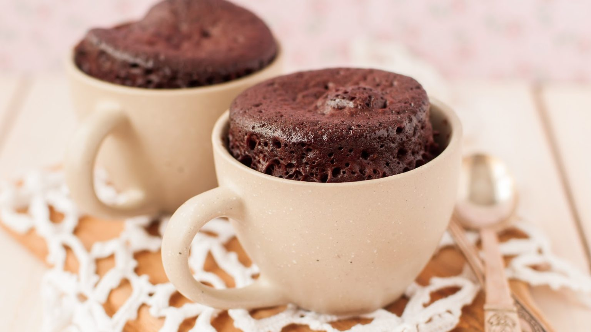

Шоколадный кекс в микроволновке

Рецепт идеального шоколадного кекса в чашке! Очень вкусный, мягенький кекс, с изумительной бархатистой
текстурой и насыщенным ароматом шоколада. Всё это вы получите, потратив всего лишь 10 минут, ведь готовится такой шоколадный кекс в микроволновке!
Продукты (на 3 порции)
Мука пшеничная - 70 г
Какао-порошок - 15 г
Сахар - 60 г
Яйцо - 1 шт.
Молоко - 40 г
Масло подсолнечное рафинированное - 30 г
Разрыхлитель для теста - 2 г
Соль - 1 щепотка
Подготовьте все необходимые ингредиенты для приготовления шоколадного кекса в микроволновке.
Муку просейте в миску вместе с разрыхлителем.
В просеянную муку всыпьте какао-порошок (не устану повторять, какао всегда используйте качественное!), сахар и соль.
Перемешайте сухие ингредиенты ложкой или венчиком.
В смесь сухих ингредиентов добавьте яйцо, влейте молоко и подсолнечное рафинированное масло.
Венчиком быстро вымешайте однородное тесто, похожее по консистенции и цвету на растопленный шоколад.
Разложите шоколадное тесто в чашки, занимая не более половины объёма каждой из них. Объём используемой мною чашки составляет 230 мл.
Поставьте чашки в микроволновку. Готовьте шоколадные кексы 3 минуты при мощности 800 Вт.
Шоколадные кексы сильно поднимаются во время выпечки и не опадают. Дайте шоколадным кексам остыть. Кстати, эти шоколадные кексы также хороши в тёплом виде.
Подавайте шоколадные кексы в чашках. По желанию кексы можно полить сгущёнкой, так они будут более сочными!
Приятного аппетита!